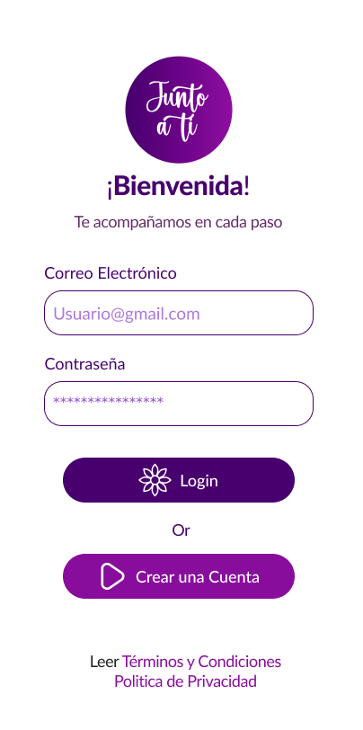
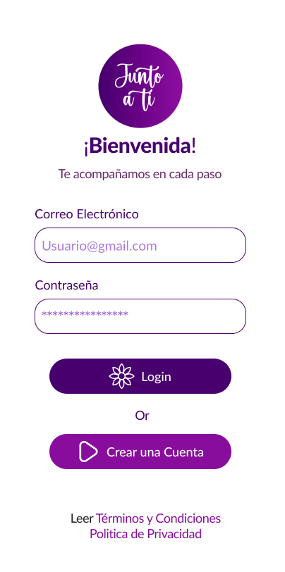

Sobre Mi
Soy una profesional en publicidad con 8 años de experiencia en edición de video e imagen para medios digitales, donde combino lo mejor de la edición audiovisual con estrategias de marketing y publicidad digital. Me encanta mejorar la experiencia del usuario con diseños innovadores y tecnología aplicada al diseño web.
Edición Aplicada al Marketing Digital
Mi pasión es usar mis habilidades de edición para darle un boost a la presencia de marcas en el mundo digital. No solo creo contenido visual atractivo, sino que me enfoco en generar impacto y mejorar cómo interactúan los usuarios con las marcas.
Mejora de la Experiencia del Usuario
Me gusta diseñar experiencias visuales que no solo se ven bien, sino que también hacen que la interacción en plataformas digitales y páginas web sea más fluida y efectiva. Para mí, el buen diseño va de la mano con un marketing inteligente que da resultados.
Mis Superpoderes
Escucha Activa: Tengo un talento especial para escuchar y entender lo que mis clientes realmente necesitan. Esto me permite capturar su visión y transformarla en resultados que superan sus expectativas.
Creatividad Aplicada: Me encanta tomar ideas abstractas y darles forma de manera organizada y coherente, siempre alineadas con los objetivos propuestos. Logro que lo que está en la mente se convierta en realidad, de forma clara y efectiva.
Aprendizaje Continuo: Soy un entusiasta de la tecnología y siempre estoy al tanto de las últimas tendencias y herramientas. Esto me permite implementar soluciones innovadoras que beneficien a mi equipo y mantengan nuestras estrategias frescas y relevantes.
 
